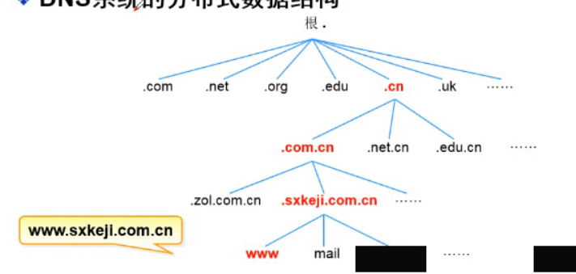
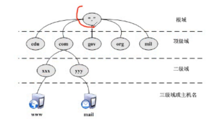
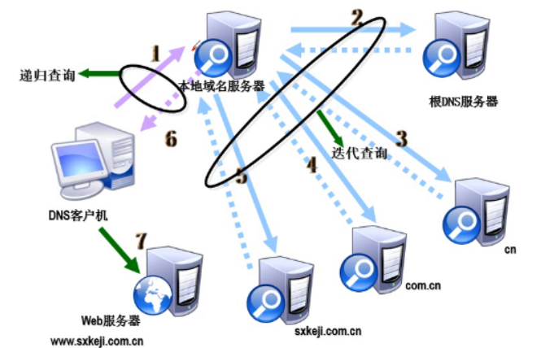

DNS
DNS概述
域名系统（英文：Domain Name System，缩写：DNS）是互联网的一项服务。它作为将域名和IP地址相互映射的一个分布式数据库，能够使人更方便地访问互联网。
域名 —》解析成ip
早起使用hosts文件解析域名
主机名称重复
主机维护困难
1
2
3
4[root@NFS-server ~]# cat /etc/hosts
127.0.0.1 localhost localhost.localdomain localhost4 localhost4.localdomain4
::1 localhost localhost.localdomain localhost6 localhost6.localdomain6
[root@NFS-server ~]#现在的hosts文件，只是电脑自己和自己做解析
电脑上网—-》hosts文件—->dns服务器
1
2
3
4
5
6
7
8
9
10
11
12
13
14
15
16
17
18
19[root@NFS-server ~]# ping www.baidu.com
PING www.a.shifen.com (14.215.177.38) 56(84) bytes of data.
64 bytes from 14.215.177.38 (14.215.177.38): icmp_seq=1 ttl=55 time=45.9 ms
64 bytes from 14.215.177.38 (14.215.177.38): icmp_seq=2 ttl=55 time=55.4 ms
64 bytes from 14.215.177.38 (14.215.177.38): icmp_seq=3 ttl=55 time=36.6 ms
^C
--- www.a.shifen.com ping statistics ---
3 packets transmitted, 3 received, 0% packet loss, time 2003ms
rtt min/avg/max/mdev = 36.662/46.021/55.471/7.679 ms
[root@NFS-server ~]# vim /etc/hosts
[root@NFS-server ~]# ping www.baidu.com
PING www.baidu.com (192.168.0.1) 56(84) bytes of data.
64 bytes from www.baidu.com (192.168.0.1): icmp_seq=1 ttl=128 time=166 ms
64 bytes from www.baidu.com (192.168.0.1): icmp_seq=2 ttl=128 time=24.0 ms
^C
--- www.baidu.com ping statistics ---
2 packets transmitted, 2 received, 0% packet loss, time 1002ms
rtt min/avg/max/mdev = 24.086/95.287/166.488/71.201 ms
[root@NFS-server ~]#dns服务器—》引导作用（劫持）
===
windows里hosts文件的位置
C:\Windows\System32\drivers\etc\hosts==
DNS（域名系统）
- 分布式
- 层次性
DNS系统的作用
- 正向解析:根据主机名称(域名)查找对应的IP地址 —->使用最多
- 查看/etc/hosts和浏览器缓存
- DNS服务器告诉客户机
- 然后客户机访问WEB服务器
- 反向解析:根据IP地址查找对应的主机域名
- 正向解析:根据主机名称(域名)查找对应的IP地址 —->使用最多
DNS系统的分布式数据结构
- 
域名空间结构
根域
顶级域
组织域
国家域地区域
反向域com 负责商业的域名 Commercial
org 非盈利组织 organizationhttps://www.centos.org/edu 教育机构 education
cn 中国的域名 china
tw 台湾 tanwang
hk 香港 hongkong
gov 政府 government

https://www.baidu.com
baidu.com 域名
www 是baidu.com这个域里的一台主机
主机名.DNS后缀=FQDN
完全符合要求的域名二级域
三级域
主机名
主机名.DNS后缀=FQDN
DNS解析流程
DNS查询方式
- 迭代
- 递归
DNS服务器的类型
其他
CDN
- CDN的全称是Content Delivery Network，即内容分发网络。CDN是构建在网络之上的内容分发网络，依靠部署在各地的边缘服务器，通过中心平台的负载均衡、内容分发、调度等功能模块，使用户就近获取所需内容，降低网络拥塞，提高用户访问响应速度和命中率。CDN的关键技术主要有内容存储和分发技术。
- CDN：
用户就近访问---》dns解析 加速 缓存
问题
浏览器如何通过域名查询URL对应的IP（对应服务器地址）呢？
1.浏览器缓存;浏览最会按照一定的频率缓存DNS记录。
2、操作系统緩存:如果浏览器缓存中找不到需要的DNS记录.那就去操作系统中找。—》/etc/hosts
3、路由缓存:路由器也有DNS缓存 —>本地dns服务器4、ISP的DNS服务器: ISP是互联网服务提供商[nternet Service Provider)的简称, ISP有专门的DNS服务器应对DNS查询请求。
5、根服务器：ISP的DNS服务器还找不到的话，它就会向根服务器发出请求，进行迭代查询（DNS服务器先问根域名服务器.com域名服务器的IP地址，然后再问.com域名服务器，依次类推）。 然后再递归告诉客户机，同时将查询得到的记录缓存一份。
电脑上不了网，如何排查？
1.看ip地址配置正确–》网关和dns服务器
2.网线是否连接
3.路由器是否能上网—》同一个局域网的人是否可以上网
4.给电信打电话–》10000、10086、10001我们如何获得自己的域名
域名如何与服务器的ip进行绑定？
购买了阿里云的服务器–》获得公网ip 120.77.248.190
购买了域名：sanchuangedu.cn –>后台
绑定： 将某个域名对应一个ip
califeng —》120.77.248.190A 记录其实就是一条正向解析记录 address
www —>120.77.248.190